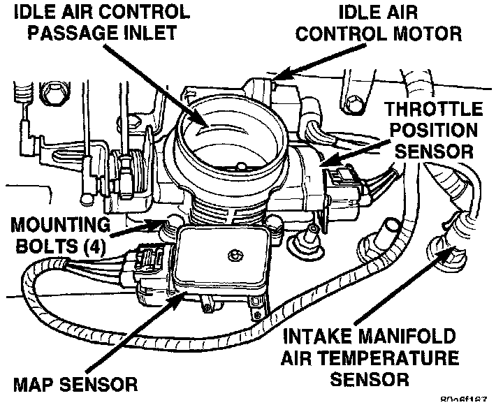

Throttle Body: Service and Repair
CAUTION: A (factory adjusted) set screw is used to mechanically limit the position of the throttle body throttle plate. Never attempt to adjust the engine idle speed using this screw. All idle speed functions are controlled by the powertrain control module (PCM).
REMOVAL
1. Remove the air cleaner duct at throttle body.
Fig. 66 Sensor Locations:

2. Disconnect throttle body electrical connectors at MAP sensor, IAC motor and TPS (Fig. 66).
3. Remove all control cables from throttle body (lever) arm.
4. Remove four throttle body mounting bolts.
5. Remove throttle body from intake manifold.
6. Discard old throttle body-to-intake manifold gasket.
INSTALLATION
1. Clean the mating surfaces of the throttle body and the intake manifold.
2. Install new throttle body-to-intake manifold gasket.
3. Install throttle body to intake manifold.
4. Install four mounting bolts. Tighten bolts to 11 Nm (100 in. lbs.) torque.
5. Install control cables.
6. Install electrical connectors.
7. Install air duct at throttle body